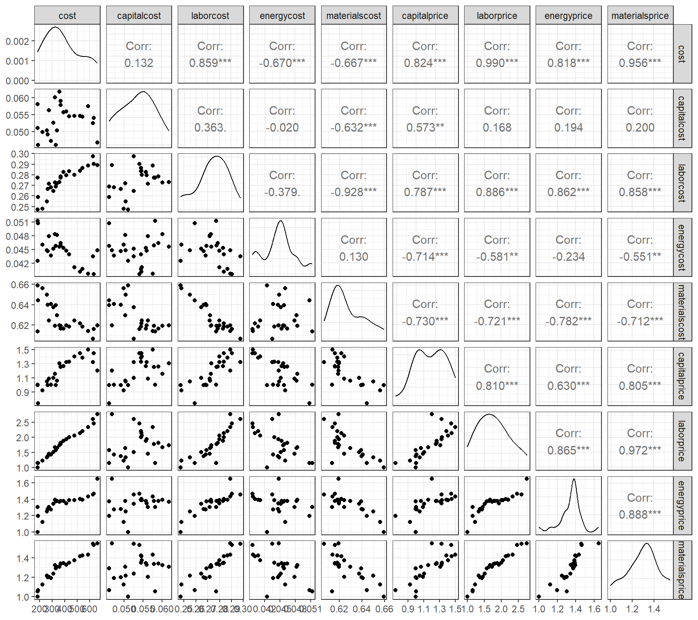
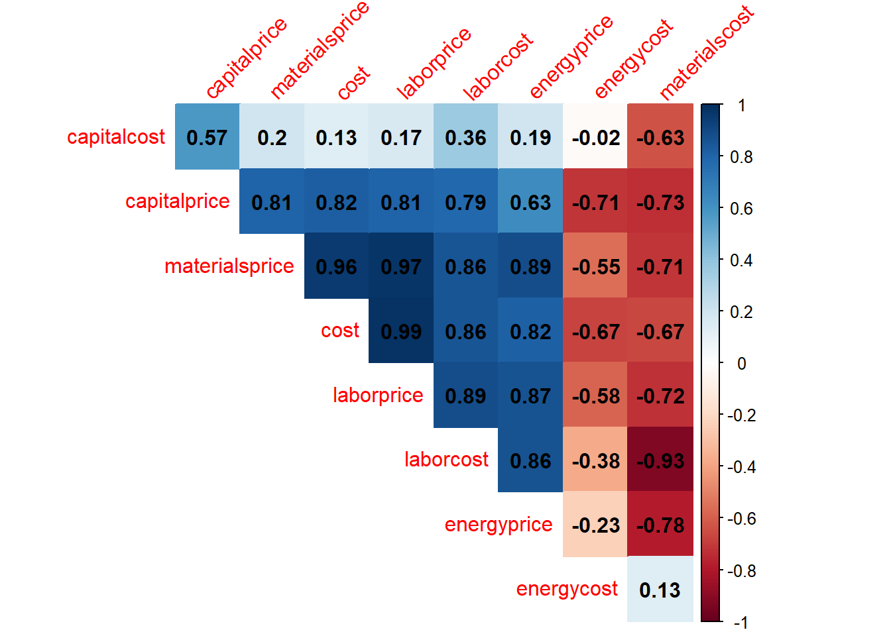
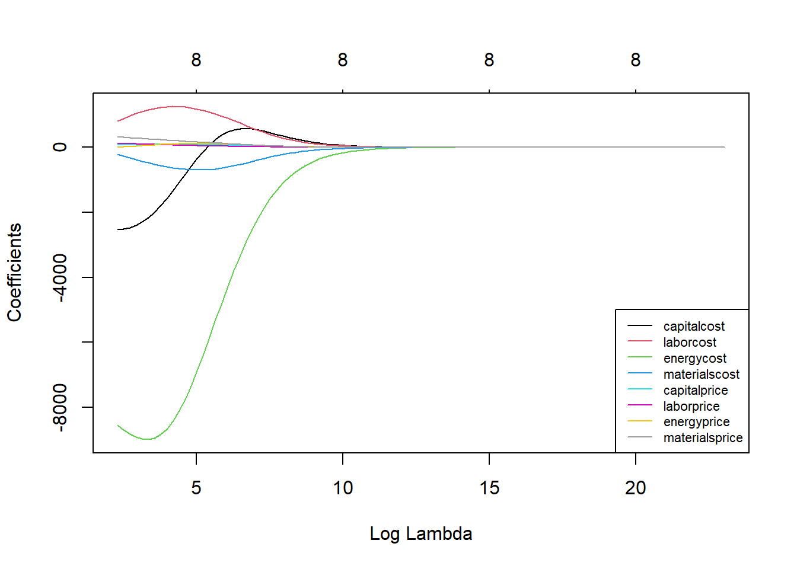
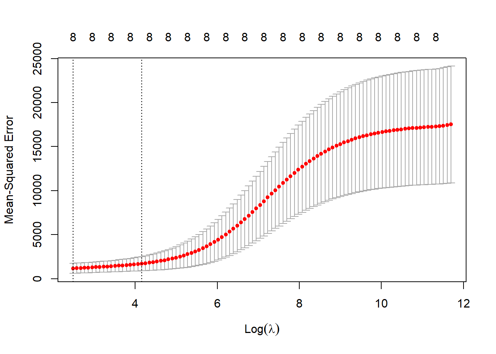
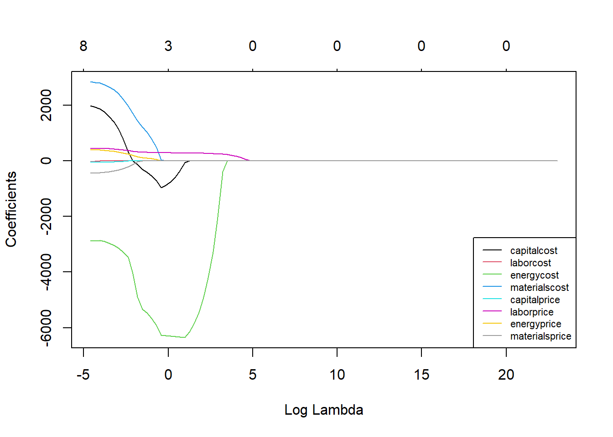
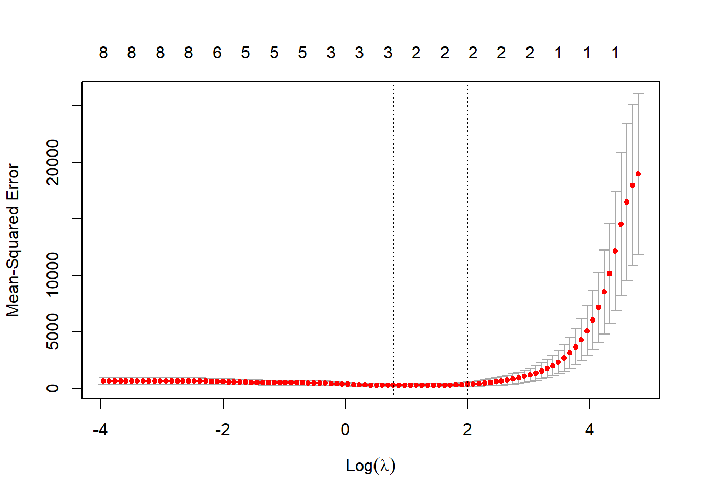
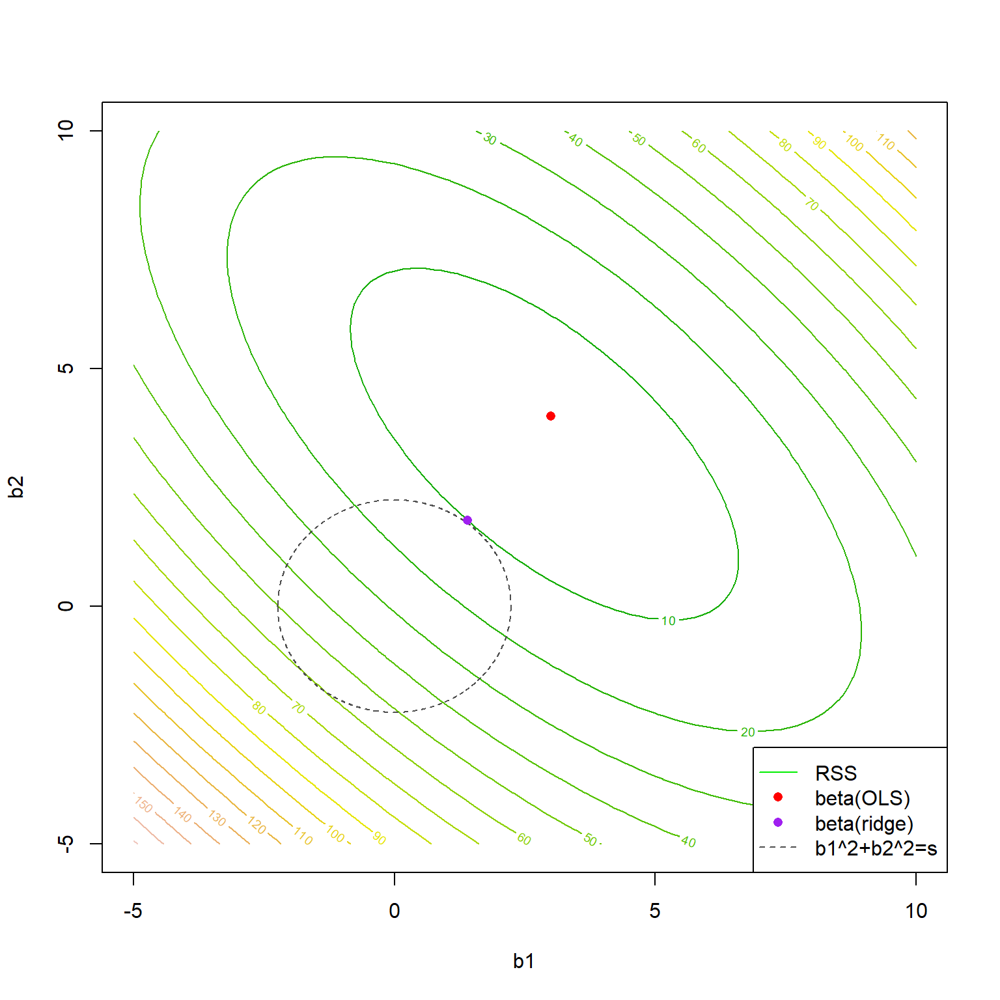

Regressão rígida e LASSO
Regressão rígida e LASSO
Regressão rígida
Em regressão múltipla, a regressão rígida tem por finalizadade encolher ou diminuir coeficientes de variáveis correlacionadas, com a finalidade de minimizar a variância de modelos devido a inflação dos coeficientes. Quando um modelo de regressão linear múltipla apresenta muitas variáveis correlacionadas, seus coeficientes podem ser mal estimados, acarretando em alta variância das estimativas.
Para encolher os coeficientes, á regressão rígida usa uma alteração na função perda usada nas estimativas de mínimos quadrados.
Sejam a função perda quadrática descrita anteriormente para mínimos quadrados em regressão múltipla.
\[ \begin{aligned} L(\mathbf{\beta}) = \mathbf{\varepsilon}^T\mathbf{\varepsilon} = (\mathbf{y} - \mathbf{X}\mathbf{\beta})^T(\mathbf{y} - \mathbf{X}\mathbf{\beta}) \\ =\mathbf{y}^T\mathbf{y} - 2\mathbf{\beta}^T\mathbf{X}^T\mathbf{y} + \mathbf{\beta}^T\mathbf{X}^T\mathbf{X}\mathbf{\beta} \end{aligned} \]
Tal quantidade consiste em notação algébrica na soma dos quadrados dos erros, isto é:
\[ L(\mathbf{\beta}) = \sum_{i=1}^N\varepsilon_i^2 =\sum_{i=1}^N(y_i-\hat{y}_i)^2\text{ ,} \] onde \(\hat{y}_i= \beta_0+\sum_{j=1}^k\beta_jx_{ij}\), para o caso de regressão linear múltipla.
Minimizando tal quantidade pela escolha de \(\beta\), conforme visto anteriormente, resultam nas equações normais de mínimos quadrados, \(\hat{\beta}=(\mathbf{X}^T\mathbf{X})^{-1}(\mathbf{X}^T\mathbf{y})\). Adicionado o termo de penalização de encolhimento dos coeficientes, \(\lambda\beta^T\beta\), tem-se:
\[ \begin{aligned} L(\mathbf{\beta,\lambda}) = \mathbf{y}^T\mathbf{y} - 2\mathbf{\beta}^T\mathbf{X}^T\mathbf{y} + \mathbf{\beta}^T\mathbf{X}^T\mathbf{X}\mathbf{\beta} + \lambda\beta^T\beta \end{aligned} \]
Em notação algébrica a quantidade acima, pode ser escrita como:
\[ \begin{aligned} L(\mathbf{\beta,\lambda}) = \sum_{i=1}^N\varepsilon_i^2=\sum_{i=1}^N(y_i-\beta_0-\sum_{j=1}^k\beta_jx_{ij})^2 + \lambda\sum_{j=1}^k\beta_j^2 \end{aligned} \]
Onde \(\lambda\) é uma constante não negativa de penalização de encolhimento (shrinkage penalty), que previne a inflação dos coeficientes. Se \(\lambda=0\), tem-se as estimativas padrão de mínimos quadrados que, no caso de presença de multicolineariedade, implicarão em um modelo com alta variância. Se \(\lambda \rightarrow \infty\), os coeficientes tenderão a 0, \(\beta_j \rightarrow 0\), \(\forall j\), o que implicaria, por outro lado, em um modelo com alto vício ou viés. A regressão rígida visa, portanto, trabalhar o conflito entre vício e variância em modelos de regressão múltipla. Deve-se buscar um valor de \(\lambda\) que estabeleça uma melhor relação entre tais medidas de erro.
Tomando a notação matricial, resolvendo para \(\beta\), os coeficientes de mínimos quadrados para regressão rígida ficam:
\[ \begin{aligned} \frac{\partial L}{\partial \mathbf{\beta}} = -2\mathbf{X}^T\mathbf{y} + 2\mathbf{X}^T\mathbf{X}\mathbf{\beta} +2\lambda\beta= 0 \\ \hat{\mathbf{\beta}} = (\mathbf{X}^T\mathbf{X}+\lambda\mathbf{I})^{-1}(\mathbf{X}^T\mathbf{y}) \end{aligned} \]
Seja um conjunto de dados com informações de custos de empresas de manufatura. Pode-se observar a presença de alta correlação entre algumas das variáveis de custo consideradas.
O gráfico de correlação a seguir expõe as correlações aos pares em um mapa de calor, de forma que as positivas tendem para o azul escuro, enquanto as negativas para vermelho escuro.

Em um modelo de regressão rígida considerando o custo como resposta e as demais variáveis como preditores, o gráfico a seguir expõe os níveis dos coeficientes em relação à constante de encolhimento \(\lambda\). Observa-se que o aumento desta constante implica no encolhimento dos coeficientes. Deve-se tentar encontrar o valor de \(\lambda\) que minimize o erro do modelo. Por exemplo, para o custo de energia, pode-se observar que um \(\lambda=0\) implica em alta magnitude do coeficiente, sendo observado o encolhimento deste com o aumento de \(\lambda\).

A partir de validação cruzada pode-se selecionar o valor de \(\lambda\) dado um grid de valores. Para o exemplo \(\lambda^*=12.022\).

Os coeficientes de regerssão rígida para o \(\lambda\) ótimo são expostos à seguir.
9 x 1 sparse Matrix of class "dgCMatrix"
s1
(Intercept) 123.25007
capitalcost -3408.22133
laborcost 1363.79881
energycost -8394.77369
materialscost -386.30713
capitalprice 72.51032
laborprice 117.87583
energyprice 95.02103
materialsprice 201.05565Regressão via LASSO
Um problema da regressão rígida, se comparada aos métodos de seleção de variáveis, como a eliminação para trás, é que este método não faz seleção de coeficientes ou termos no modelo. Ou seja, a regressão rígida não reduz o modelo a partir da exclusão de variáveis correlacionadas, o que implica na manutenção de preditores redundantes no modelo. Logo, a regressão rígida apenas encolhe os coeficientes.
Uma alternativa à regressão rígida que promove a seleção de coeficientes é a regressão pelo operador de seleção e contração mínima absoluta ou Least Absolute Shrinkage and Selection Operator - LASSO. A regressão LASSO muda a penalização da função perda considerando a norma \(L_1\), \(\sum_{j=1}^k|\beta_j|\) em detrimento da norma \(L_2\), \(\sum_{j=1}^k\beta_j^2\), usada no caso rígido.
\[ \begin{aligned} L(\mathbf{\beta,\lambda}) = \sum_{i=1}^N\varepsilon_i^2=\sum_{i=1}^N(y_i-\beta_0-\sum_{j=1}^k\beta_jx_{ij})^2 + \lambda\sum_{j=1}^k|\beta_j| \end{aligned} \]
No caso da regressão via LASSO, não há solução fechada ou equações normais, como no caso rígido. Logo, a formulação acima deve ser minimizada via programação quadrática para estimar os coeficientes.
A seguir ilustra-se os valores dos coeficientes no exemplo anterior em função do parâmetro de encolhimento e seleção de variáveis, \(\lambda\), na regressão via LASSO. É possível observar que à medida que \(\lambda\) aumenta alguns coeficientes vão sendo anulados e, portanto, excluídos do modelo.

Tomando o exemplo anterior para o caso LASSO, o valor ótimo do parâmetro de encolhimento e selção é \(\lambda^*=2.415\).

Os coeficientes de regressão via LASSO para o \(\lambda\) ótimo são expostos à seguir. Pode-se observar que neste caso é realizada a seleção dos coeficientes mais importantes, sendo removidos aqueles das variáveis que apresentam multicolineariedade e menor importância em relação às selecionadas.
9 x 1 sparse Matrix of class "dgCMatrix"
s1
(Intercept) 179.2195
capitalcost -175.5755
laborcost .
energycost -6210.1544
materialscost .
capitalprice .
laborprice 276.2006
energyprice .
materialsprice . Formulações alternativas para regressão rígida e LASSO
Uma formulação alternativa para o problema de regressão rígida pode ser expressa como segue, onde \(s\) seria um parâmetro associado a \(\lambda\) que limita o crescimento dos coeficientes.
\[ \begin{aligned} Min \Biggl\{\sum_{i=1}^N(y_i-\beta_0-\sum_{j=1}^k\beta_jx_{ij})^2\Biggl\} \\ st.:\sum_{j=1}^k\beta_j^2 \leq s \end{aligned} \]
Para o caso da regressão via LASSO a formulação fica conforme segue.
\[ \begin{aligned} Min \Biggl\{\sum_{i=1}^N(y_i-\beta_0-\sum_{j=1}^k\beta_jx_{ij})^2\Biggl\} \\ st.:\sum_{j=1}^k|\beta_j| \leq s \end{aligned} \]
A seguir ilustra-se a função perda quadrática sendo minimizada segundo a formulação de regressão rígida exposta. Pode-se observar que o valor dos coeficientes de mínimos quadrados são encolhidos quando a restrição de regressão rígida é imposta.

Referências
Hastie, T., Tibshirani, R., Friedman, J. H., & Friedman, J. H. (2009). The elements of statistical learning: data mining, inference, and prediction (Vol. 2, pp. 1-758). New York: springer.
Gareth, J., Daniela, W., Trevor, H., & Robert, T. (2013). An introduction to statistical learning: with applications in R. Spinger.